茨城県古河市大手町｜そば・うどん
十一時から八時まで、
通しで。
古河の住宅街で、そばとうどんをお出ししております。
遅めのお昼も、早めの夕飯も、そのままどうぞ。
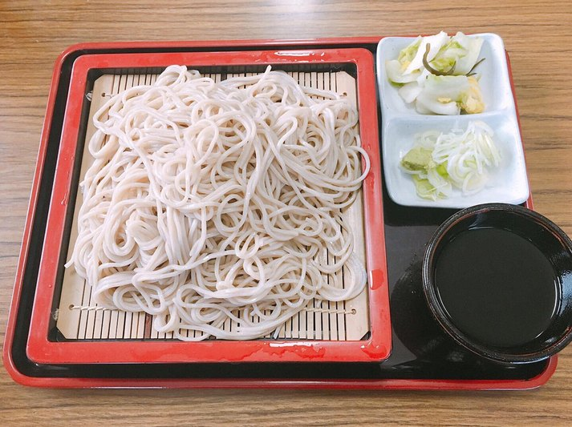
お昼どきを過ぎてからの一枚も、夕飯前の早い一杯も、同じように承ります。思い立ったときにおいでください。火曜日は、お休みをいただいております。
出前もいたします。まずはお電話でご相談ください。年越しそばは、毎年大晦日にお届けしております。
0280-22-3975出前のご相談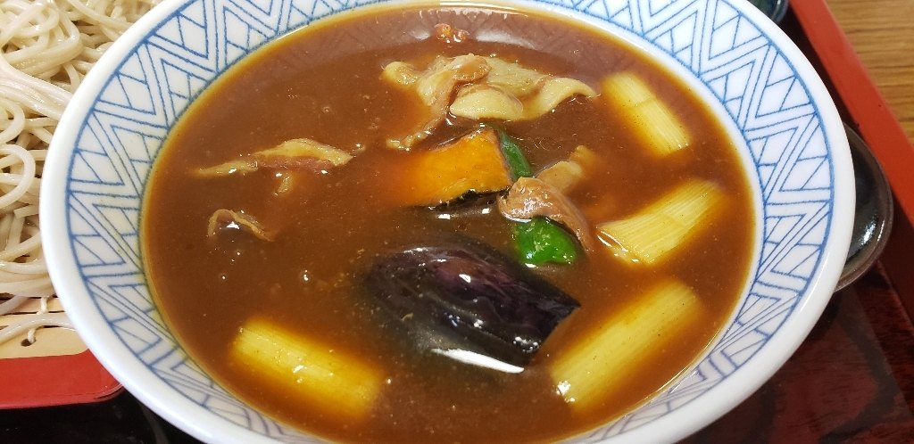
看板の一品
ナス、ししとう、カボチャ、もち、えび、豚肉、長ネギ。七福神にちなんだ七種の具を入れた、当店のカレー麺です。そば屋仲間と情報交換や研究を重ねて、この一杯に仕上げました。
850円（税込）
「土日夜に営業している蕎麦屋がこの近隣に無く重宝 … 物価高騰のこの時代にありがたい価格 いつまでも元気で営業していただきたい」
お客様の声より
「天もり蕎麦大盛りを食べましたが、香りもよく歯ごたえのある細麺でした。蕎麦つゆは鰹出汁で、甘すぎずしょっぱすぎずちょうどいい感じでした。天麩羅は口に入れると衣がこぼれ落ちる程サクサク… リーズナブルな価格で美味しかったです。」
お客様の声より
「年越し蕎麦は毎年近所のいつわ蕎麦屋で出前、蕎麦の香りも良く茹で加減がバッチリ 汁がカツオの香りと味がちょうど良い味付け とても良い 毎年大晦日に持って来て頂けるのでありがたく感謝しております」
お客様の声より
「注文前に棒アイスのおもてなし … 接客は良く気持ちよく食事ができました」
お客様の声より
「天そばを頂きました。揚げたて天ぷらでサクサクでした。季節がらタケノコの天ぷらがあり嬉しかったですね。」
お客様の声より
ふだんの店の姿を、そのままご覧ください。
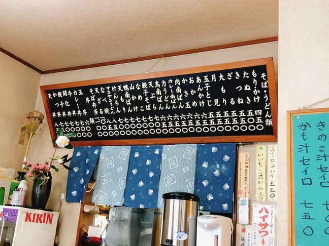
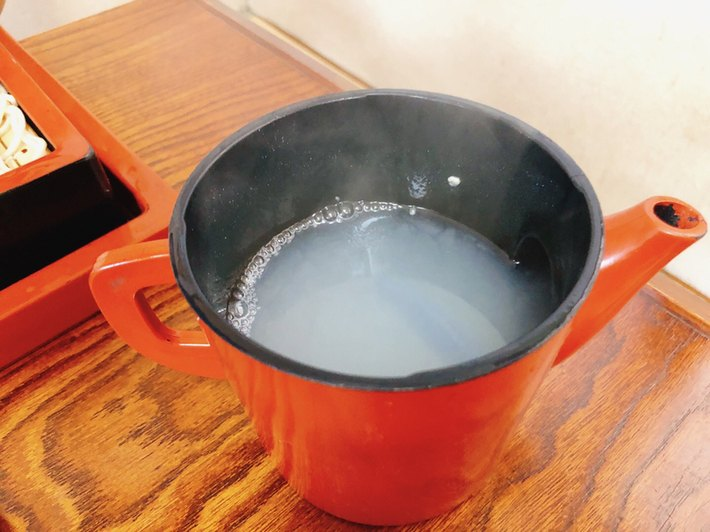
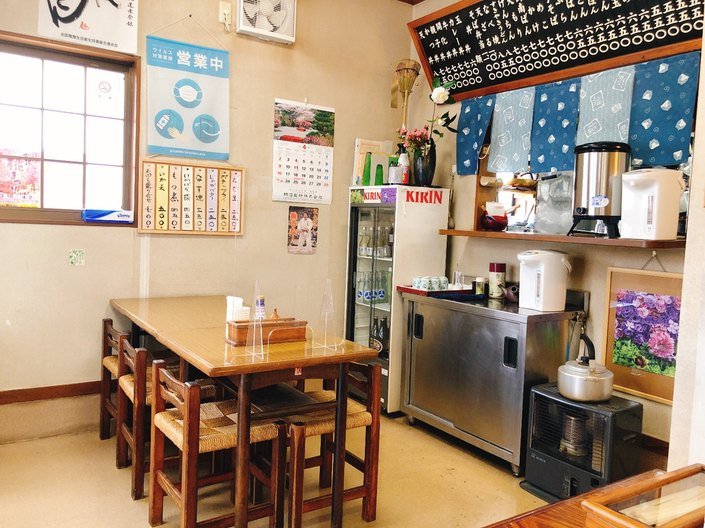
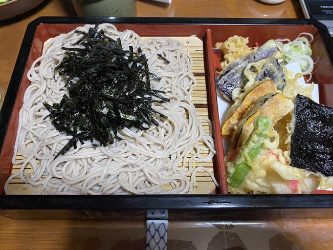
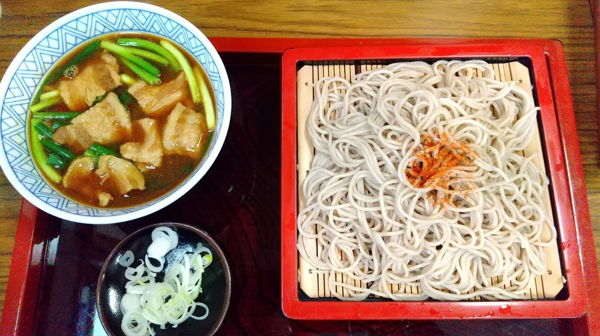
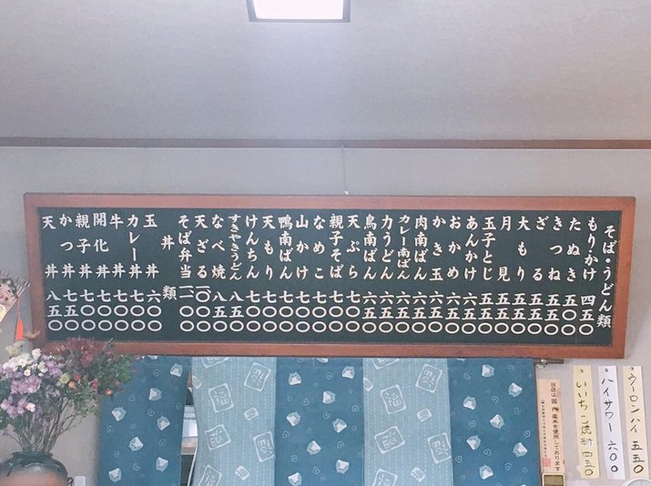
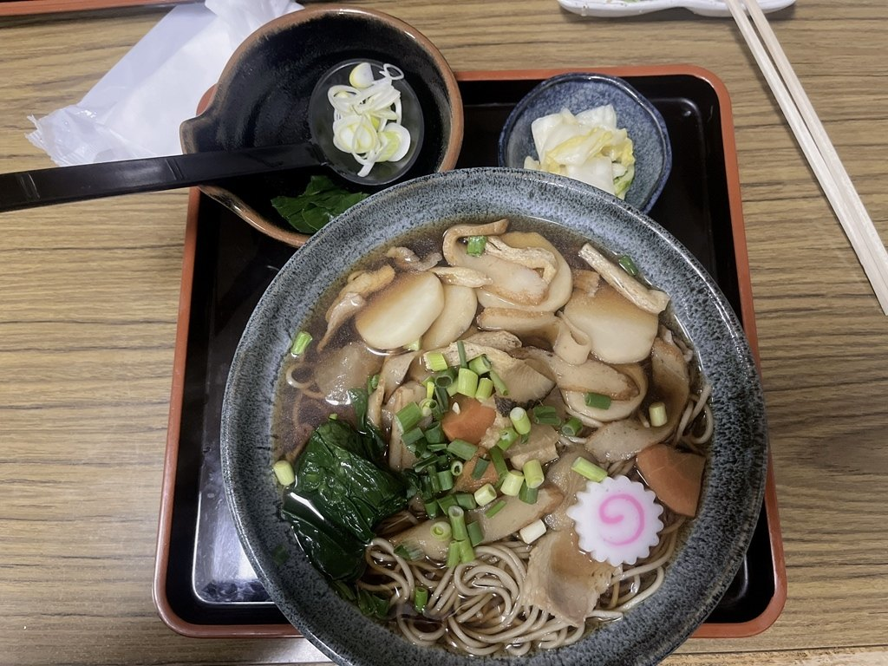
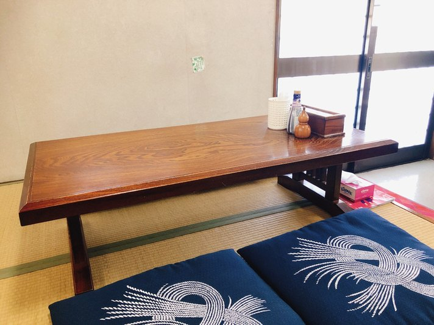
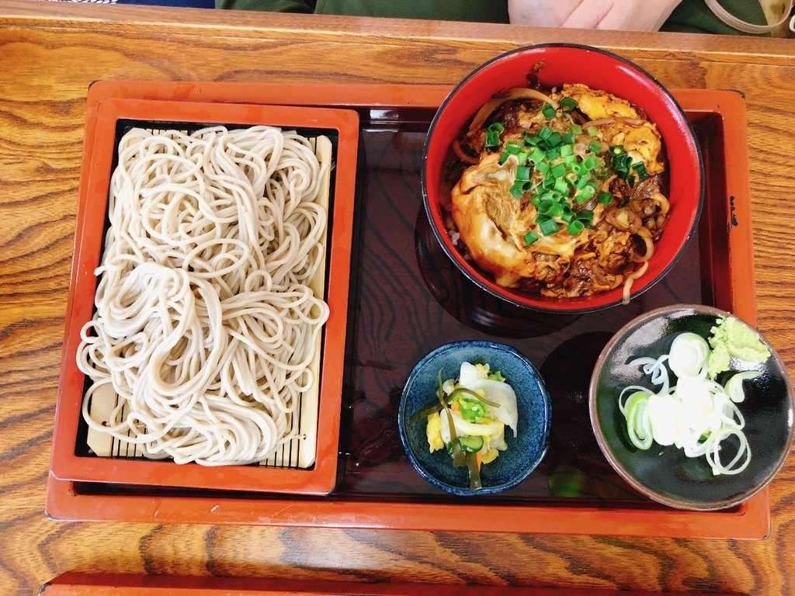
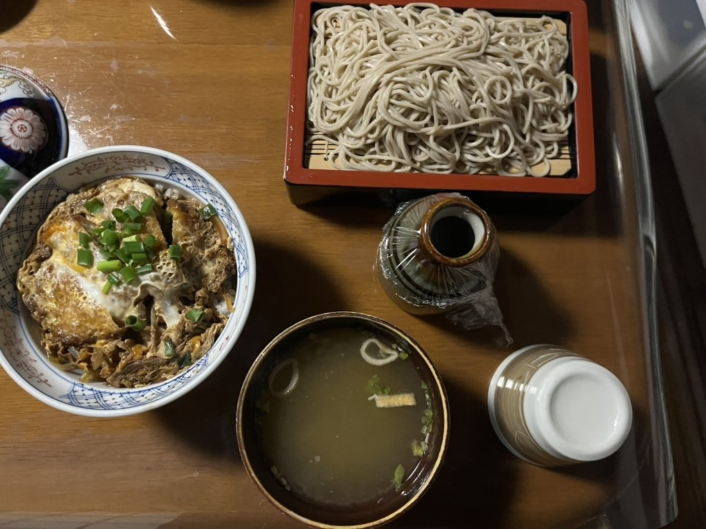
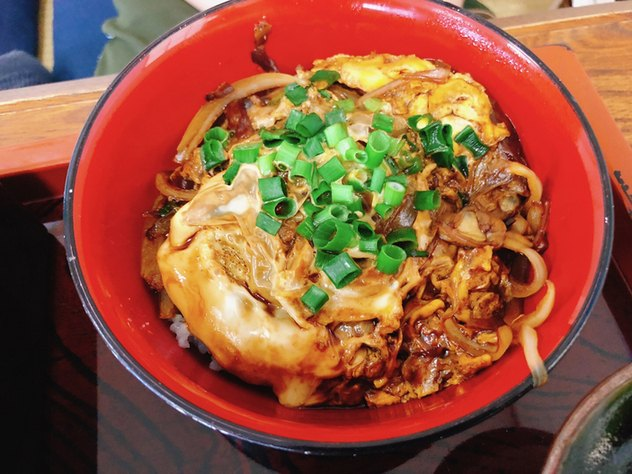
住宅街の路地の奥にございます。店の前の道が細うございますので、お車でお越しの際はどうぞお気をつけください。駐車場もご用意しております。
お支払いは現金のみでお願いしております。
道順のご確認や出前のご相談、そのほかご不明な点も、お電話でお答えいたします。
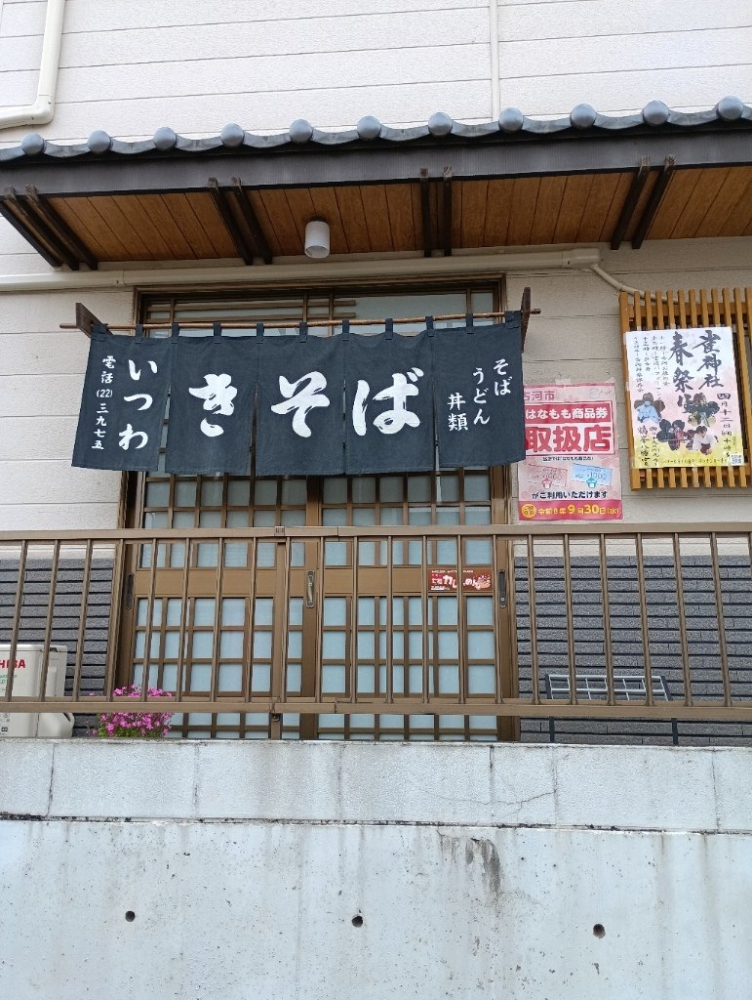
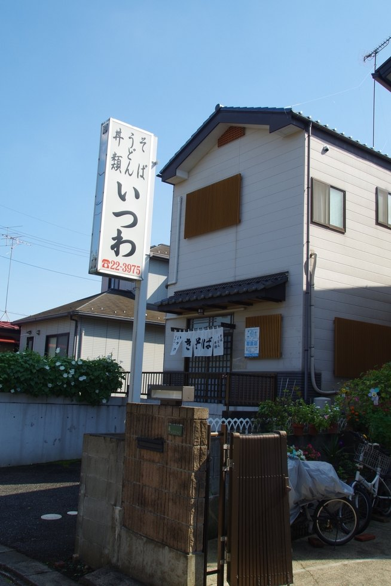
| 住所 | 〒306-0032 茨城県古河市大手町4-19 |
|---|---|
| 電話 | 0280-22-3975 |
| 営業時間 | 11:00〜20:00（休憩なしの通し営業） |
| 定休日 | 火曜日 |
| 席 | テーブル席・座敷席 |
| 駐車場 | ございます。店の前の道が細いので、お気をつけてお越しください |
| お支払い | 現金のみ |